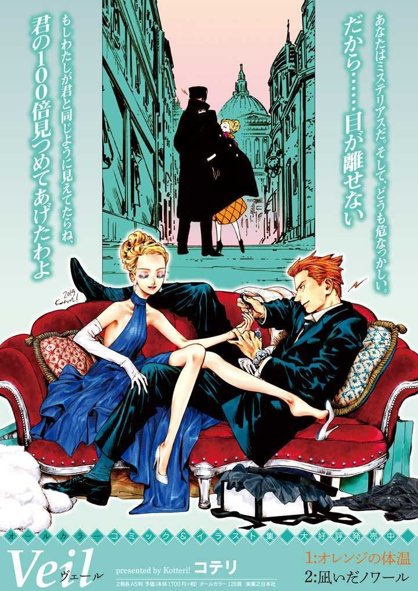

Veil & Emma
Thể loại: Đời thường, Tình cảm
Mô tả:
Veil & Emma là một truyện tranh ngắn / webcomic đời thường – chữa lành, xoay quanh mối quan hệ giữa Veli và Emma. Truyện không đặt nặng cốt truyện lớn hay cao trào, mà tập trung vào những khoảnh khắc nhỏ, ấm áp và rất con người: nói chuyện, trêu chọc, an ủi, ở bên nhau khi cần. Nét vẽ mềm, màu sắc dịu, cảm giác rất “đời” và thân mật.
Tóm tắt cốt truyện:
Câu chuyện theo chân Veli, một người có vẻ ngoài cộc cằn, thẳng thắn nhưng thực chất rất quan tâm, và Emma, người mang nét ngây thơ, nhạy cảm và dễ bị tổn thương. Hai người thường xuyên tương tác qua những đoạn hội thoại giản dị, đôi khi hài hước, đôi khi rất lặng. Không có anh hùng, không có phản diện — chỉ là những mảnh đời nhỏ, nơi Veli và Emma lắng nghe, quan sát và ở cạnh nhau, dù không phải lúc nào cũng nói ra điều mình nghĩ. Chính những điều tưởng như vụn vặt ấy lại tạo nên cảm giác gắn bó và chữa lành rất mạnh. Veli & Emma giống như một cuốn sổ ghi chép những khoảnh khắc bình thường, nhưng đủ để khiến người đọc chậm lại và cảm thấy ấm áp.
Bình luận
Vui lòng đăng nhập để bình luận.